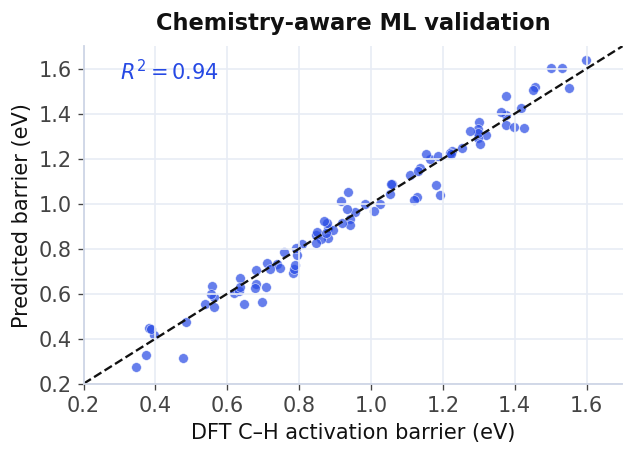
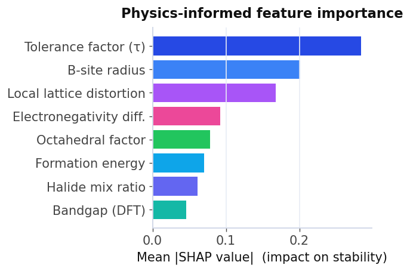
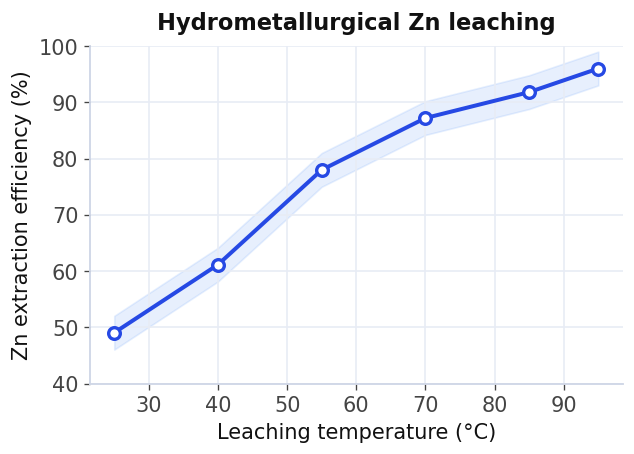
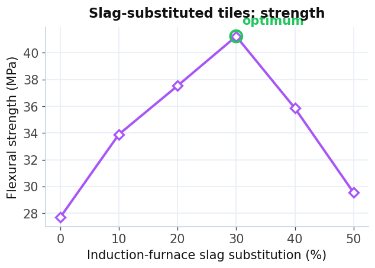
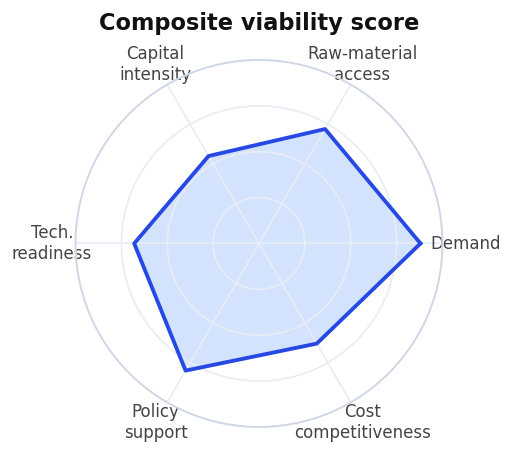
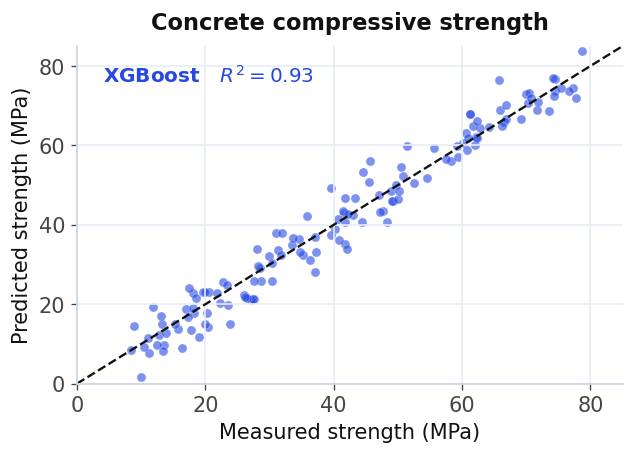
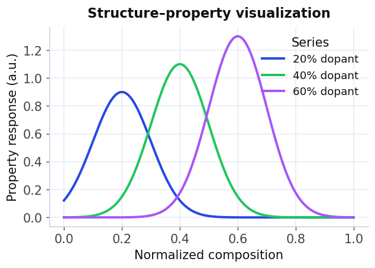

I am in my final year of Materials and Metallurgical Engineering at BUET. My work focuses on sustainable materials engineering for energy storage and extractive metallurgy: protecting battery electrodes from corrosion, recovering critical metals from industrial waste, and using computation to guide both.
Download CVI am a final-year undergraduate student in Materials and Metallurgical Engineering at Bangladesh University of Engineering and Technology (BUET). My research focuses on sustainable materials engineering for energy storage and extractive metallurgy, spanning corrosion-resistant coatings for battery electrodes, the selective recovery of critical metals from industrial waste, and data-driven and computational methods for materials analysis. On the computational side I integrate machine learning and molecular dynamics simulations to predict material properties and accelerate materials discovery, and I am expanding into density functional theory (DFT) to complement data-driven methods with first-principles calculations. Alongside this I have hands-on experimental experience in electrochemical energy storage, extractive metallurgy, and green metals processing. I have also spent over two years teaching physics to high school and undergraduate engineering students, with an emphasis on conceptual understanding grounded in fundamental physical principles.
Laboratory Experiences: Electrochemical impedance spectroscopy (EIS), Tafel and potentiodynamic polarization, electrodeposition, sol-gel synthesis, spin coating, XRD, SEM, FTIR, OES, metallography, hydrometallurgical leaching, mechanical testing
Relevant Coursework: Kinetics and Transport Phenomena in Materials; Phase Diagrams and Transformations; Corrosion and Degradation of Metals and Alloys; Thermodynamics of Materials; Mechanical Behavior of Materials; Electrical, Optical and Magnetic Properties of Materials; Advanced Ceramics; and Materials Processing for Micro and Nano Systems.
GPA 5.00 out of 5.00 with Full Ride Scholarship
GPA 5.00 out of 5.00 with Full Ride Scholarship

This study introduces a chemistry-aware validation framework for the machine-learning models used to screen single-atom-alloy catalysts, focusing on the prediction of methane C-H activation barriers. It demonstrates that naive random cross-validation substantially overstates model performance, whereas realistic splits such as leave-one-metal-out and cluster-based partitioning expose the true limits of generalization. From these findings the work establishes practical reliability guidelines for ML-driven catalyst discovery, helping ensure that computational screening translates faithfully to real chemistry.

This work develops a physics-informed, explainable machine-learning framework that predicts the synthesizability and thermodynamic stability of lead-free CsSn mixed-halide perovskites (CsSn(ClxBryI1-x-y)3). A Positive-Unlabeled learning strategy that combines transductive bagging with decision-tree classifiers estimates synthesis probability from literature-derived data, while a 76-dimensional descriptor set spanning compositional, elemental, structural, and DFT-derived thermodynamic features feeds gradient-boosting regressors. SHAP analysis makes the predictions physically interpretable, revealing the advanced tolerance factor (τ), B-site atomic character, and local lattice distortion as the dominant stability descriptors, and ultimately bridging computational screening with experimental feasibility.
Sodium-ion batteries are among the most credible routes to grid-scale storage that does not depend on lithium, but the metallic current collectors inside them sit in an electrolyte that attacks them. Pitting and interfacial breakdown raise contact resistance over repeated cycling, producing a quiet, cumulative loss of capacity that is easily misattributed to the electrode material itself. My undergraduate thesis isolates this failure mode and evaluates whether polyaniline, a conducting polymer that remains electronically active in its emeraldine salt form, can serve as a protective layer that blocks electrolyte ingress without adding series resistance. The work first establishes a baseline for the corrosion behaviour of the uncoated current collector in sodium-ion electrolyte, then assesses coated samples against it using potentiodynamic polarization and electrochemical impedance spectroscopy, with surface characterization relating the electrochemical response to what is physically happening at the interface.

As a research assistant, I characterize electric arc furnace dust, a hazardous by-product of steelmaking, and investigate hydrometallurgical routes for selectively leaching zinc from it. The goal is a sustainable, circular zinc supply that feeds directly into zinc-battery manufacturing, closing a loop between industrial waste and next-generation energy storage. A central part of the work is a feasibility study on scaling the process to industrial production within Bangladesh's existing steel facilities, so that the chemistry proven at the bench can translate into a domestic, green source of a critical battery metal that the country currently imports.

In collaboration with DBL Ceramics, this capstone substituted the Malaysian semi-plastic clay used in conventional tiles with induction-furnace slag, a domestic industrial waste. The slag-based tiles achieved a higher modulus of rupture, lower water absorption, and better economic viability than the conventional product, with SEM, XPS, and XRD used to confirm why. The microstructural work traces how porosity and phase assemblage evolve as the slag fraction increases, which is what identifies the optimal slag content rather than merely reporting it, turning an industrial waste stream into a viable, lower cost construction product.

This paper proposes a composite viability framework for strategic import substitution in developing economies, integrating demand, raw-material access, capital intensity, technology readiness, policy support, and cost competitiveness into a single, transparent decision score. Applied to Bangladesh's iron and steel sector, the framework prioritizes the most defensible substitution opportunities and quantifies where domestic production can realistically displace imports. The result is a data-driven methodology that supports a stronger, greener domestic materials economy and generalizes across other developing economies.

I compared four regression models on the UCI concrete dataset of 1,030 samples to predict compressive strength from composition and curing parameters. Ensemble models performed much better than linear regression, with XGBoost achieving an R2 of about 0.93. Feature importance recovered the composition-strength relationships already known to concrete science, such as the dominant roles of curing age and the water-cement ratio.
View on GitHub
I created publication-quality scientific plots using Python libraries like Matplotlib and Seaborn to explore how material composition relates to physical properties. My focus was on clear presentation, accurate labeling, and interpreting the data based on physics, not just making the visuals look good.
View on GitHubI simulated void growth and ductile fracture in single-crystal aluminum under uniaxial tension using LAMMPS, analyzing the stress-strain response to a peak of roughly 7.4 GPa and tracking per-atom stress evolution. The simulation makes visible the moment at which deformation localizes around a growing void, rather than inferring it from bulk response alone.
View on GitHubI built a linear-regression pipeline that predicts material density from compositional inputs, with the full algorithm and code implemented from scratch rather than called from a library. Writing the cost function and gradient descent directly was the point of the exercise: understanding what the optimizer is doing before relying on it in the ensemble work above.
View on GitHubI teach physics to students ranging from middle school (Class 6) to those preparing for university entrance. My approach includes live sessions, mentoring, and guided practice. I also create curriculum-aligned digital learning materials, tutorial videos, and problem-solving resources to help students develop a strong understanding and analytical skills at various levels.
I helped implement the new national high-school science curriculum by creating clear lesson plans, explanatory lectures, and problem-solving materials focused on assessments. Using one of the largest online learning platforms in the country, I turned curriculum goals into easy-to-understand teaching and exam-focused content.
Observed electric-arc furnace and rolling-mill operations, and studied how ML-based quality-control systems integrate with real-time process sensors and production-monitoring infrastructure, connecting shop floor practice to data driven process optimization.
Observed the full ceramic-tile production cycle: raw-material processing, magnetic separation, die fabrication, and finished-product quality inspection, which gave me the industrial backdrop to my capstone work on slag-substituted tiles.
I spearheaded recruitment initiatives for and contributed to the BUET Photographic Society, provided free education to rural, underprivileged students while advocating for the value of literacy, and facilitated technical sessions for the BUET Robotics Society alongside supporting logistics for the BUET Admission Test Committee.
-Full ride scholarship: Higher Secondary School Certificate (HSC), Secondary School Certificate (SSC)
-National university admission test ranking:
rank 269th of 20,000+ (Military Institute of Science and Technology),
854th of 100,000+ (University of Dhaka), 1172nd of 16,000+ (Bangladesh University of Engineering and Technology)
Every stable material a model predicts is still a promise owed to the lab. I work at the seam between computation and experiment, so the next generation of clean-energy materials is designed with intent, not stumbled upon.Mahbir Ahmed Maheen